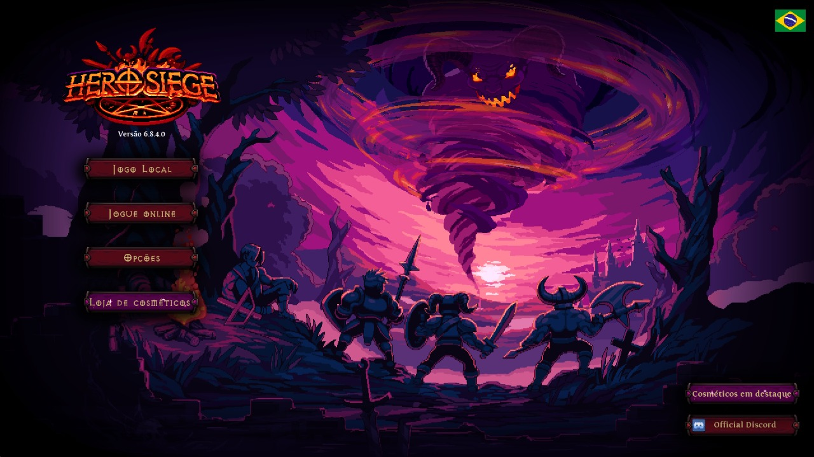
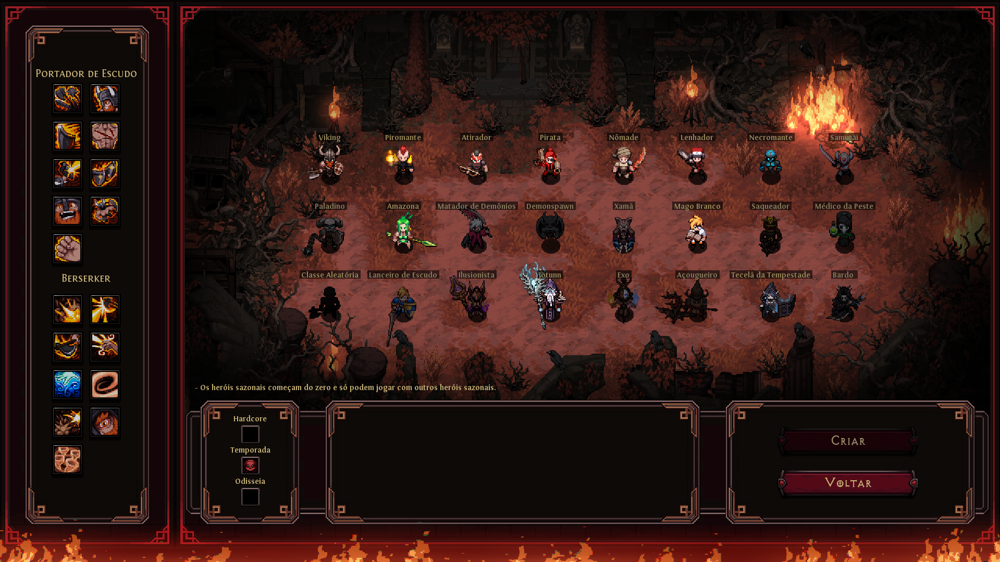
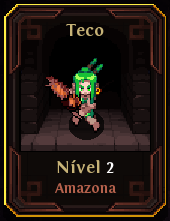
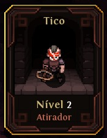
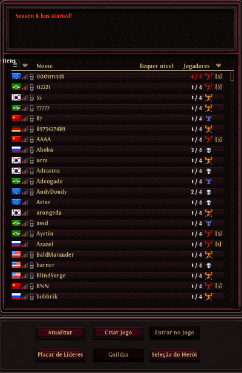
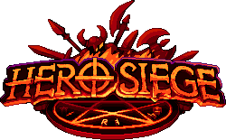

Hero Siege é um jogo de ação RPG com elementos de hack'n'slash e roguelike, desenvolvido pela Panic Art Studios. O jogo combina exploração de masmorras, combates frenéticos contra hordas de inimigos e coleta de itens em um ambiente gerado proceduralmente.

O jogador pode escolher entre diversas classes de heróis, cada uma com habilidades únicas, e deve enfrentar inimigos, armadilhas e chefes poderosos para avançar pelos atos do jogo.
| Classe | Tipo de Arma |
|---|---|
| Viking | Curta distância (machados/martelos) |
| Pyromancer | Longa distância (fogo e magia) |
| Atirador | Longa distância (arco e flecha) |
| Pirata | Longa distância (pistolas) |
| Nômade | Curta distância (katanas) |
| Lenhador | Curta distância (Serra elétrica) |
| Necromante | Curta distância (magia negra) |
| Mago Branco | Curta distância (magia) |

Para esse tutorial usaremos as classes Amazona e Atirador.

Além do modo solo, o jogo também conta com multiplayer online e local, permitindo que amigos unam forças para derrotar inimigos em conjunto.

Na tela de seleção é possível entrar nos mapas criados por outros jogadores ou permitir que entrem no seu. Também é possível configurar quem terá permissão de acesso ao mapa.
O jogo possui uma variedade de inimigos, desde monstros comuns até chefes desafiadores, cada um com padrões de ataque distintos. A progressão do personagem é feita através do ganho de experiência, coleta de itens e aprimoramento de habilidades.
